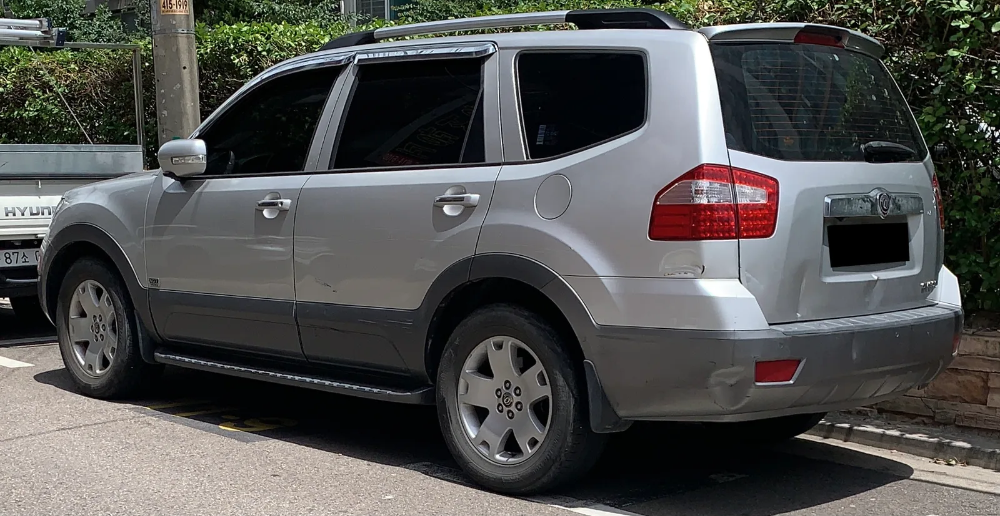

▲ 현대 그랜저 — 등 5개 차종 62만349대가 HECU(전자제어유압장치) 내구성 부족에 따른 화재 우려로 2024년 9월 27일부터 리콜에 들어갔다
📍 이 리콜은 언제 발표됐나
이번에 다시 살펴보는 91만7,547대 HECU 리콜은 국토교통부가 2024년 9월 발표한 건입니다. 당시 큰 화제가 됐던 사안이지만, 2026년 8월에도 그랜저·투싼·카니발·G80 등에서 화재 우려로 대규모 리콜(51만2,393대)이 다시 발생하면서 HECU를 포함한 현대차·기아 화재 결함 리콜이 반복되는 패턴에 관심이 쏠리고 있습니다. 아래에서는 2024년 리콜의 세부 내용과 함께, 2026년 리콜과 무엇이 같고 다른지 정리합니다.
국토교통부는 2024년 9월, 현대차·기아 등을 대상으로 13개 차종, 총 91만7,547대에 대한 리콜을 발표했습니다. 이 리콜의 핵심은 HECU(전자제어유압장치)의 내구성 부족으로 인한 화재 우려였습니다. 브레이크 계통을 통합 제어하는 핵심 부품에서 결함이 발견됐다는 점에서, 파워트레인이나 소프트웨어 결함이 주로 언급되던 이전 리콜들과는 결이 달랐습니다.
1. 2024년 리콜 개요 — 왜 13개 차종, 91만대나 됐나
이 리콜은 결함 원인이 크게 두 갈래로 나뉘면서 대상 차종이 넓어졌습니다. 하나는 HECU(전자제어유압장치) 내구성 부족으로 인한 화재 우려이고, 다른 하나는 그랜드스타렉스에 한정된 엔진 부품 체결 불량입니다. 두 원인 모두 최종적으로 화재로 이어질 수 있다는 점은 같지만, 결함이 발생하는 부위는 전혀 다릅니다.
| 차종 | 대수 | 결함 원인 | 시정조치 시작일 |
|---|---|---|---|
| 현대 그랜저 등 5개 차종 | 620,349대 | HECU 내구성 부족, 화재 우려 | 2024년 9월 27일 |
| 현대 그랜드스타렉스 | 201,393대 | 엔진 부품 체결부 내구성 부족, 화재 우려 | 2024년 9월 26일 |
| 기아 모하비 | 89,469대 | HECU 내구성 부족, 화재 우려 | 2024년 9월 30일 |
| 기아 스포티지 | 3,233대 | HECU 내구성 부족, 화재 우려 | 2024년 9월 23일 |

▲ 현대 그랜저 후면부 — 2024년 HECU 리콜에서 가장 큰 비중을 차지한 차종으로, 62만349대가 그랜저 외 4개 차종과 함께 대상에 포함됐다
2. HECU가 뭐길래 — 브레이크 제어장치가 화재 원인이 된 이유
HECU(Hydraulic Electronic Control Unit, 전자제어유압장치)는 잠김방지제동장치(ABS), 차체자세제어장치(ESC), 구동력제어장치(TCS) 등 제동 관련 안전장치를 통합 제어하는 핵심 부품입니다. 브레이크 페달을 밟았을 때 유압을 조절해 바퀴가 잠기지 않도록 하거나, 미끄러짐이 감지되면 자동으로 개입해 차체 자세를 바로잡는 역할을 합니다.
📍 왜 화재로 이어지나
HECU 내부에는 회로 기판이 들어있는데, 기밀(密閉) 처리가 불완전하면 수분이나 이물질이 내부로 유입될 수 있습니다. 이렇게 유입된 이물질이나 습기가 회로 기판에서 전기적 합선(단락)을 일으키면, 그 열이 주변 배선이나 플라스틱 부품에 옮겨붙어 엔진룸 화재로 번질 가능성이 있습니다. 이는 충돌 등 외부 충격 없이도 발생할 수 있는 결함이라는 점에서 더 주의가 필요합니다.
사실 HECU발 화재 우려 리콜은 이때가 처음이 아니었습니다. 국내에서는 2020년 기아 스팅어를 시작으로 투싼 등 여러 차종에서 유사한 원인의 리콜이 반복돼 왔습니다. 이번 2024년 리콜에서도 시정조치는 HECU 내부 퓨즈를 개선품으로 교체하는 방식으로 진행됐으며, 개선된 퓨즈는 합선이 발생해도 즉시 전원을 차단해 화재로 번지는 것을 막아줍니다.
📍 해외에서도 반복된 HECU발 화재 리콜
HECU(ABS 유압 제어장치) 결함으로 인한 화재 우려는 국내에 국한된 문제가 아닙니다. 미국 도로교통안전국(NHTSA)은 2016년 이후 현대차·기아가 진행한 16건의 관련 리콜, 총 640만 대에 대한 대응이 적절했는지 조사에 착수했습니다. 앞서 2023년 9월에는 기아 173만 대, 현대차 164만 대가 같은 이유(HECU 내부 브레이크액 누유로 인한 합선·화재 가능성)로 한꺼번에 리콜되기도 했습니다. 국내외를 막론하고 ABS·ESC를 통합 제어하는 유압 제어장치 자체의 내구성·방수 문제가 반복적으로 지적돼 온 셈입니다.

▲ 현대 그랜저 실내 — HECU는 운전석에서 직접 보이지 않는 엔진룸 내 부품이지만, 브레이크 페달 조작 시 유압을 제어해 ABS·ESC 작동에 관여한다
3. 차종별 확인 방법 — 내 차가 대상인지 어떻게 아나

▲ 기아 스포티지 — 3,233대가 그랜저와 같은 HECU 결함으로 2024년 9월 23일부터 가장 먼저 시정조치에 들어갔다
대상 차량 소유자에게는 등록된 연락처로 우편·문자를 통한 개별 안내가 발송되지만, 연락처가 바뀌었거나 중고로 구입한 차량이라면 안내가 누락될 수 있습니다. 이 경우 직접 조회하는 것이 가장 확실합니다.
자동차리콜센터에서 차대번호를 입력하면 리콜 대상 여부를 바로 확인할 수 있습니다. 자동차리콜센터 바로가기
✅ 리콜 대상 확인 및 시정조치 절차
· 1단계 — 자동차리콜센터(car.go.kr) 또는 대표전화(080-357-2500)에서 차량번호·차대번호로 조회
· 2단계 — 대상 확인 시 가까운 현대차·기아 서비스센터 방문 예약
· 3단계 — HECU 퓨즈 교체 등 시정조치는 전액 무상으로 진행
· 4단계 — 시정조치 전이라도 엔진룸에서 타는 냄새나 경고등이 뜨면 즉시 운행을 중단하고 서비스센터 문의

▲ 기아 모하비 — 8만9,469대가 HECU 내구성 부족으로 2024년 리콜 대상에 포함됐다(사진은 구형 모델 예시) ⓒ Benespit, Wikimedia Commons (CC BY-SA 4.0)
4. 그랜드스타렉스는 다른 이유 — HECU가 아니라 엔진 부품 문제

▲ 현대 그랜드스타렉스 — 20만1,393대가 HECU가 아닌 엔진 부품 체결부 내구성 부족으로 별도 리콜 대상에 포함됐다(사진은 특장 사양 예시)
이 리콜에서 그랜드스타렉스 20만1,393대는 다른 4개 차종과 결함 원인이 다르다는 점을 명확히 구분해야 합니다. 그랜저·모하비·스포티지는 HECU 내구성 부족이 원인이지만, 그랜드스타렉스는 엔진 내 부품 체결부의 내구성이 부족해 화재로 이어질 수 있다는 것이 국토교통부의 설명입니다. 최종 결과(화재 우려)는 같지만, 결함이 발생하는 위치와 정비 방식이 다르기 때문에 그랜드스타렉스 소유자는 HECU 교체가 아니라 엔진 부품 체결 상태 점검·보강 안내를 받았습니다. 시정조치는 2024년 9월 26일부터 시작됐습니다.
5. 2년 뒤 다시 반복된 화재 리콜 — 2026년 8월 사례와 비교
2024년 9월 91만7,547대 HECU 리콜 이후에도, 현대차·기아 계열의 화재 관련 대규모 리콜은 계속되고 있습니다. 대표적으로 2026년 8월 6일 국토교통부는 현대차·기아·스텔란티스코리아·혼다코리아 등 4개사, 13개 차종 51만2,393대(이 중 현대차·기아·제네시스가 11개 차종 50만9,258대)에 대한 리콜을 한 번에 발표했습니다. 이 발표에는 서로 다른 세 가지 결함이 섞여 있었습니다.
| 시기 | 대상·규모 | 결함 원인 |
|---|---|---|
| 2024년 9월 | 그랜저·모하비·스포티지·그랜드스타렉스 등 13개 차종 91만7,547대 | HECU 내구성 부족(제동 통합 제어장치), 그랜드스타렉스는 엔진 부품 체결 불량 |
| 2026년 8월 | 그랜저·아반떼 하이브리드 16만8,181대 | 하이브리드 통합 제어기(HPCU) 소프트웨어 설계 미흡 — 내부 소자 과열로 화재 가능 |
| 2026년 8월 | G80·G90·GV70·GV80·그랜저·카니발·K8 등 23만6,296대 | 엔진 내부 부품 너트 체결 불량으로 연료 누유 — 화재 가능 |
| 2026년 8월 | 투싼·투싼 하이브리드 10만4,781대 | 전방충돌방지 보조(FCA) 소프트웨어 오작동(화재와 무관) |
📍 그랜저는 왜 리콜 명단에 자주 오르나
공교롭게도 그랜저는 2024년 HECU 리콜에 이어, 2026년 8월 하이브리드 통합 제어기 리콜과 연료 누유 리콜에도 이름을 올렸습니다. 세 리콜은 발생 연도도, 원인도, 정비 방식도 전혀 다른 별개의 결함입니다. 2024년 건은 파워트레인과 무관한 HECU(제동 통합 제어장치) 자체의 내구성 문제였고, 2026년 건들은 하이브리드 통합 제어기 소프트웨어와 엔진 부품 체결 불량이 원인입니다. 그랜저를 오래 보유하고 있다면 자동차리콜센터에서 연식·트림별로 어떤 리콜 대상인지 각각 확인해볼 필요가 있습니다.
결국 2024년 HECU 리콜과 2026년 리콜은 서로 다른 부품, 다른 발표 시점의 별개 사건입니다. 다만 두 사례 모두 "충돌 등 외부 요인 없이도 화재로 이어질 수 있는 결함"이라는 공통점이 있고, 국내 완성차 업계에서 이런 유형의 리콜이 반복되고 있다는 점은 눈여겨볼 대목입니다. 대상 차종을 보유하고 있다면 안내 문자를 기다리기보다 직접 조회해 시정조치 여부를 확인하는 것이 안전합니다.
6. 요약
국토교통부는 2024년 9월 현대차·기아 등 13개 차종 91만7,547대에 대해 화재 우려로 리콜을 발표했습니다. 그랜저·모하비·스포티지 등은 제동 통합 제어장치인 HECU의 내구성 부족이, 그랜드스타렉스는 엔진 부품 체결부 내구성 부족이 각각 원인이었습니다. 시정조치는 9월 23일 스포티지를 시작으로 26일 그랜드스타렉스, 27일 그랜저 등, 30일 모하비 순으로 진행됐습니다.
이 2024년 리콜은 2026년 8월 발표된 화재 관련 리콜(하이브리드 통합 제어기 SW 결함, 연료 누유 등 51만2,393대)과는 원인이 전혀 다른 별개 사건이지만, HECU를 비롯한 유압 제어장치·화재 관련 리콜이 국내외에서 반복돼 왔다는 공통된 맥락이 있습니다. 그랜저처럼 여러 해에 걸쳐 서로 다른 리콜에 이름을 올린 차종도 있는 만큼, 보유 차량이 있다면 자동차리콜센터에서 연식·트림별 대상 여부를 확인하는 것이 안전합니다.